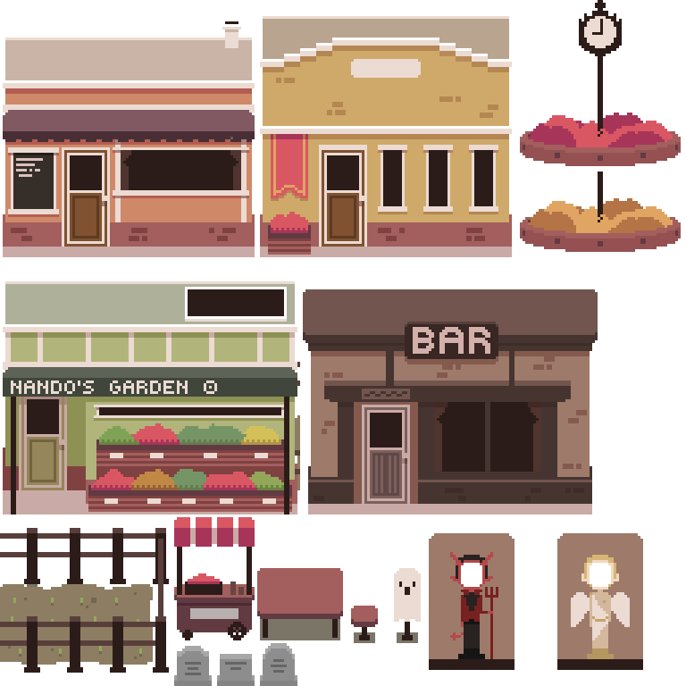
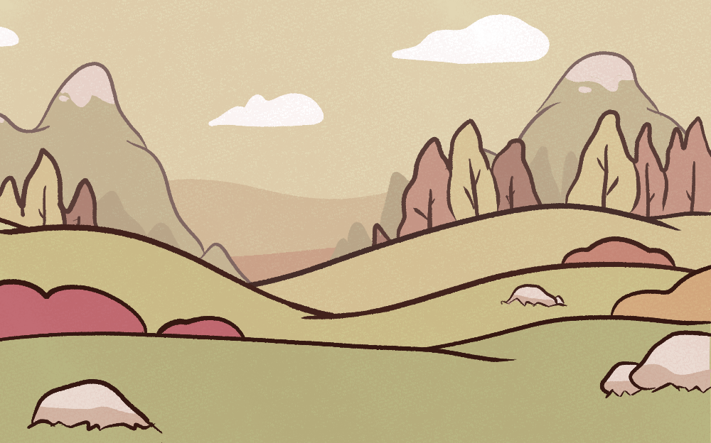

Apr 2021
Apr 2021
Fallen is a challenging game all about helping others down on earth after being kicked out of Heaven
for trying to steal the Sky God's powerful amulet. In Havoton, a Halloween obsessed town, you are tasked
with playing short minigames to help the residents of the town, making sure that everyone is ready for Halloween.
Fallen is meant to be difficult and played a few times in order to reach an ending. There are four endings in total.
Nominee for CMPUT 250 Game of the Year
Nominee for CMPUT 250 Game of the Year
RPG Maker
Clip Studio Paint
Aseprite

Trailer
Details
Fallen was made for CMPUT 250 "Computer and Games" class at the University of Alberta. Over the course of a 4-month semester, we were tasked
to develop a game, using RPG Maker, in teams of 6.
I worked primarily on the art and visual aspects of the game, and took part in designing the game. I used a mix of pixel art and storybook-inspired digital art for the assets in the game.
I worked primarily on the art and visual aspects of the game, and took part in designing the game. I used a mix of pixel art and storybook-inspired digital art for the assets in the game.

